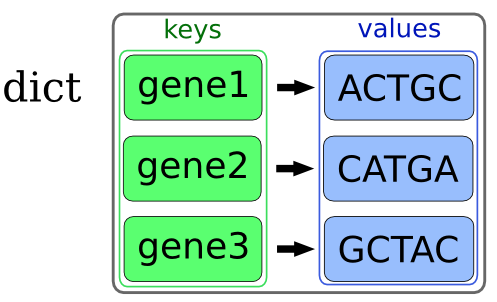
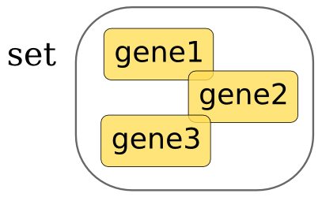
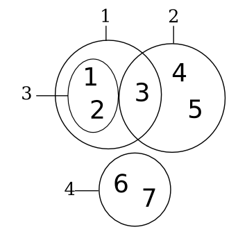

Diccionarios¶
Un diccionario es una estructura de datos que nos permite guardar parejas de claves y valores.
{kind=link}
>>> gen = {'nombre': 'rubisco', 'secuencia': 'CGACTTAGCTATCTGACTAGCT'}
>>> gen['nombre']
'rubisco'
>>> gen['secuencia']
'CGACTTAGCTATCTGACTAGCT'
>>> gen
{'nombre': 'rubisco', 'secuencia': 'CGACTTAGCTATCTGACTAGCT'}
En este caso las claves (keys) son nombre y secuencia y los valores rubisco y ‘CGACTTAGCTATCTGACTAGCT’. La clave se utiliza para almacenar los valores de un modo indexado.
>>> gen.keys()
['nombre', 'secuencia']
>>> gen.values()
['rubisco', 'CGACTTAGCTATCTGACTAGCT']
Los diccionarios the python son arrays asociativos implementados internamente como tablas hash que utilizan open addressing como método de resolución de colisiones y que redimensionan el array cuando tiene una ocupación de dos tercios.
La lista y los diccionarios cubren necesidades distintas. Una lista es una secuencia ordenada de elementos y un diccionario es un conjunto no ordenado de elementos. Un diccionario es equivalente a un hash en Perl.
Los diccionarios, como las listas, son objetos mutables, es decir una vez creados podemos modificarlos. Por ejemplo podemos añadirles nuevos elementos (items), modificar los antiguos y borrarlos:
>>> gen['proteina'] = 'HOLA'
>>> gen
{'nombre': 'rubisco', 'secuencia': 'CGACTTAGCTATCTGACTAGCT', 'proteina': 'HOLA'}
>>> gen['secuencia'] = 'TATA'
>>> gen
{'nombre': 'rubisco', 'secuencia': 'TATA', 'proteina': 'HOLA'}
>>> del gen['proteina']
>>> gen
{'nombre': 'rubisco', 'secuencia': 'TATA'}
De hecho, los diccionarios pueden crearse vacíos y rellenarse posteriormente:
>>> genes = {}
>>> genes['gen1'] = 'ADH'
>>> genes['gen2'] = 'topoisomerasa'
>>> genes
{'gen2': 'topoisomerasa', 'gen1': 'ADH'}
Dentro de los valores albergados en los diccionarios podemos guardar cualquier objeto que deseemos, pero las claves están restringidas. Pueden utilizarse varios tipos como claves, por ejemplo los str, int y las tuples, pero no puede utilizarse como clave una lista. En realidad podemos utilizar como clave cualquier objeto hasheable y la mayoría de los objetos inmutable tienen esta propiedad:
>>> diccionario = {}
>>> diccionario['nombre'] = 'Monty'
>>> diccionario[42] = 'respuesta'
>>> diccionario
{'nombre': 'Monty', 42: 'respuesta'}
>>> diccionario[['una_lista']] = 'es mutable'
Traceback (most recent call last):
File "<stdin>", line 1, in <module>
TypeError: unhashable type: 'list'
Algunas de las propiedades de las que disfrutaban las listas también tienen su equivalencia en los diccionarios. Por ejemplo, podemos averiguar cuantos items hay almacenados en un diccionario utilizando la función len:
>>> secuencias = {'seq1': 'TATA', 'seq2':'GATA'}
>>> len(secuencias)
2
También podemos comprobar si un elemento está presente en los valores almacenados en un diccionario o no. Esto nos permitirá utilizarlos con sencillez en las sentencias if:
>>> 'seq1' in secuencias
True
>>> 'seq3' in secuencias
False
>>> 'seq1' not in secuencias
False
>>> 'seq4' not in secuencias
True
Si queremos obtener una lista, o un iterador en Python 3.x, de todos los valores, claves o elementos de un diccionario podemos utilizar los métodos values, keys o items o viewvalues, viewkeys y viewitems. Esto resulta especialmente útil para iterar en los diccionarios dentro de los bucles for:
>>> secuencias.keys()
['seq2', 'seq1']
>>> secuencias.values()
['GATA', 'TATA']
>>> secuencias.items()
[('seq2', 'GATA'), ('seq1', 'TATA')]
for nombre_gen in genes.keys():
print nombre_gen
for secuencia in genes.values():
print secuencia
for nombre_gen, secuencia in genes.items():
print nombre_gen
print secuencia
También podemos utilizar directamente los diccionarios dentro de los bucles for, en este caso iteraremos sobre las claves, las siguientes dos expresiones son equivalentes:
for nombre_gen in genes.keys():
print 'Nombre gen ->', nombre_gen
print 'Secuencia gen -> ', genes[nombre_gen]
for nombre_gen in genes:
print 'Nombre gen ->', nombre_gen
print 'Secuencia gen -> ', genes[nombre_gen]
Por supuesto, los diccionarios tienen otras muchas funcionalidades, para estudiarlas se puede leer la sección correspondiente a los diccionarios en la documentación de Python o se puede consultar algunos de los manuales de referencia que se han citado anteriormente.
Sets¶
Un set, como su nombre indica, es un conjunto de objetos. Estos objetos deben ser, como en el caso de los valores de los diccionarios, inmutables, o siendo estrictos hasheables.
>>> set([1, 2, 3])
set([1, 2, 3])
Dada esta escueta descripción podríamos cometer el error de pensar que los sets son equivalentes a las listas, pero los sets son conjuntos desordenados, no son estructuras secuenciales ordenadas.
{kind=link}
Los sets también pueden crearse vacíos y ser rellenados añadiéndoles elementos posteriormente:
>>> genes = set()
>>> genes.add('gen1')
>>> genes.add('gen2')
>>> genes.add('gen3')
>>> genes
set(['gen2', 'gen3', 'gen1'])
Además de añadir los elementos de uno en uno podemos añadir también una lista (o un iterable):
>>> genes.update(['gen4', 'gen5'])
>>> genes
set(['gen4', 'gen5', 'gen2', 'gen3', 'gen1'])
Si intentamos añadir un elemento que ya existía no sucederá nada, un set no puede contener elementos repetidos:
>>> genes
set(['gen4', 'gen5', 'gen2', 'gen3', 'gen1'])
>>> genes.add('gen1')
>>> genes
set(['gen4', 'gen5', 'gen2', 'gen3', 'gen1'])
Si deseamos eliminar un elemento de un set podemos utilizando el método remove o discard. La diferencia entre ambos métodos estriba en que mientras remove generará un error si el elemento no está presente, discard no hará nada en este caso:
>>> genes
set(['gen4', 'gen5', 'gen2', 'gen3', 'gen1'])
>>> genes.remove('gen5')
>>> genes
set(['gen4', 'gen2', 'gen3', 'gen1'])
>>> genes.remove('gen8')
>>> genes.discard('gen8')
>>> genes
set(['gen4', 'gen2', 'gen3', 'gen1'])
Traceback (most recent call last):
File "<stdin>", line 1, in <module>
KeyError: 'gen8'
Por supuesto, los sets también son iterables y podemos utilizarlos dentro de bucles for.
Como en el caso de los diccionarios, podemos consultar el número de miembros que los componen y podemos comprobar si un miembro se encuentra presente:
>>> 'gen1' in genes
True
>>> 'gen7' in genes
False
>>> 'gen7' not in genes
True
Una de las principales capacidades de los sets consiste en sus métodos de comparación. Para explorarlos vamos a crear una pequeña colección de sets de prueba:
{kind=link}
>>> conj1 = set([1, 2, 3])
>>> conj2 = set([3, 4, 5])
>>> conj3 = set([1, 2])
>>> conj4 = set([6, 7])
Por ejemplo podemos comprobar si un set está completamente contenido en otro:
>>> conj2.issubset(conj1)
False
>>> conj3.issubset(conj1)
True
>>> conj1.issubset(conj2)
False
El método opuesto también existe:
>>> conj1.issuperset(conj3)
True
¿Tienen dos sets elementos en común?
>>> conj2.isdisjoint(conj1)
False
>>> conj4.isdisjoint(conj1)
True
Además de poder comparar los sets podemos unirlos, intersectarlos y restarlos. Estas operaciones generarán, como es natural nuevos sets. El método unión genera un set que contiene todos los elementos de los dos sets implicados:
>>> conj1.union(conj2)
set([1, 2, 3, 4, 5])
>>> conj1.union(conj3)
set([1, 2, 3])
Podemos obtener también la intersección de un par de sets, es decir, el conjunto de elementos que pertenecen a ambos:
>>> conj1.intersection(conj2)
set([3])
>>> conj1.intersection(conj3)
set([1, 2])
>>> conj1.intersection(conj4)
set([])
Si lo deseamos podemos restar un set a otro, es decir, eliminar los elementos un set que se encuentran presentes en el otro. Por supuesto, esta operación no es simétrica:
>>> conj1.difference(conj4)
set([1, 2, 3])
>>> conj1.difference(conj2)
set([1, 2])
>>> conj2.difference(conj1)
set([4, 5])
También disponemos de una versión simétrica de la diferencia en la que los elementos de la intersección son restados a los de la unión:
>>> conj1.symmetric_difference(conj2)
set([1, 2, 4, 5])
Estructuras de datos anidadas¶
Una de las principales fortalezas de las listas y los diccionarios, así como de otras estructuras de datos más complejas es que podemos combinarlas unas dentro de otras como si de una colección de muñecas rusas se tratase. Por ejemplo, podemos describir un conjunto de genes mediante una lista de diccionarios:
>>> genes = [ {'nombre': 'ADH', 'seq': 'GATA'},
{'nombre': 'rubisco', 'seq': 'CATA'} ]
>>> genes[0]['nombre']
'ADH'
>>> genes[1]['nombre']
'rubisco'
>>> genes[1]
{'nombre': 'rubisco', 'seq': 'CATA'}
También podríamos haber almacenado esta información dentro de un diccionario si el orden de los genes no fuese relevante para el problema a resolver:
>>> genes = {'ADH': {'seq': 'GATA', 'clonado':True},
'rubisco': {'seq': 'CATA', 'clonado':False}}
>>> genes['ADH']
{'seq': 'GATA', 'clonado': True}
>>> genes['ADH']['clonado']
True
>>> genes.keys()
['rubisco', 'ADH']
>>> genes.values()
[{'seq': 'CATA', 'clonado': False}, {'seq': 'GATA', 'clonado': True}]
Podemos anidar estas estructuras tanto como lo deseemos, aunque en la práctica si necesitamos más de dos niveles tal vez debamos utilizar otro modo de almacenar la información puesto que este puede que sea demasiado complicado como para tenerlo en la cabeza mientras estamos programando.
Ejercicios¶
Almacenamos el número de individuos por país en un diccionario:
>>> individuos = {'francia': 23, 'alemania': 10, 'italia':130}
¿Cómo accedemos al número de individuos de Francia? ¿Cómo añadimos 40 individuos de Bélgica? ¿Cómo borramos los de Italia? Los individuos de Alemania se han incrementado en dos, ¿cómo hacemos el cambio?
2. Crea un diccionario vacío para guardar los datos de un paciente y, posteriormente, guarda en él su edad (40), sexo (‘M’) y si es diabético (True). Una vez añadidos los datos, ¿cuáles serán las claves y los valores del diccionario? ¿Cuántos datos tenemos sobre este paciente?
Dado el siguiente diccionario:
gen = {'adn':'GATATGCAGT', 'codificante':'ATG'}
¿Tenemos información sobre la secuencia codificante? ¿Y sobre la proteína?
4. Crea un set con los números del uno al diez y después añade el 11 y el 12. Finalmente actualiza el set anterior añadiendo los números del 30 al 35. ¿Cuál son el primer número y el último del conjunto resultante? ¿Pertenecen el 7 y el 20 al conjunto? ¿Cuántos elementos componen el conjunto?
- Pista:
Para no escribir todos los números podemos utilizar la función range.
Dados los siguientes conjuntos de hormonas alteradas en varios pacientes:
>>> hor1 = set(['melanina', 'oxitocina', 'dopamina'])
>>> hor2 = set(['testosterona', 'melanina'])
>>> hor3 = set(['calcinotna', 'estradiol'])
¿Comparten alguna hormona el conjunto 1 y el 2? ¿Y el 1 y el 3? ¿Es el conjunto 2 un subconjunto del 1? ¿Son el 2 y el 1 y el 2 y el 3 disjuntos? ¿Cuál es el conjunto de todas las hormonas?
Dada una caracterización morfológica de unos tomates en un fichero tabular, contar cuantos son de cada color.
nombre color grado_de_madurez
big_red rojo 5
italiano amarillo 3
valenciano verde 1
penjar rojo 4
canario rojo 2
Leer el fichero de texto que represente la tabla del ejercicio anterior y guardar el resultado en un diccionario.
8. Hemos hecho dos experimientos de proteómica y hemos obtenido dos listas de proteinas, las que aparecen en el primer experimiento y las del segundo. Ambas listas se encuentran disponibles en sendos ficheros:
albumina
inmunoglobulina
antitripsina
lipoproteina
transferrina
inmunoglobulina
antitripsina
protombina
Generar, a partir de esta información, las listas de proteinas exclusivas de la muestra 1 y 2 así como las proteínas que aparecen en ambos experimentos.
Soluciones¶
Almacenamos el número de individuos por país en un diccionario:
>>> individuos = {'francia': 23, 'alemania': 10, 'italia':130}
¿Cómo accedemos al número de individuos de Francia? ¿Cómo añadimos 40 individuos de Bélgica? ¿Cómo borramos los de Italia? Los individuos de Alemania se han incrementado en dos, ¿cómo hacemos el cambio?
>>> individuos = {'francia': 23, 'alemania': 10, 'italia':130}
>>> individuos['francia']
23
>>> individuos['belgica'] = 40
>>> del individuos['italia']
>>> individuos
{'francia': 23, 'belgica': 40, 'alemania': 10}
>>> individuos['alemania'] += 2
>>> individuos
{'francia': 23, 'belgica': 40, 'alemania': 12}
2. Crea un diccionario vacío para guardar los datos de un paciente y, posteriormente, guarda en él su edad (40), sexo (‘M’) y si es diabético (True). Una vez añadidos los datos, ¿cuáles serán las claves y los valores del diccionario? ¿Cuántos datos tenemos sobre este paciente?
>>> paciente = {}
>>> paciente['edad'] = 40
>>> paciente['sexo'] = 'M'
>>> paciente['diabetico'] = True
>>> paciente
{'edad': 40, 'diabetico': True, 'sexo': 'M'}
>>> paciente.keys()
['edad', 'diabetico', 'sexo']
>>> paciente.values()
[40, True, 'M']
>>> len(paciente)
3
Dado el siguiente diccionario:
gen = {'adn':'GATATGCAGT', 'codificante':'ATG'}
¿Tenemos información sobre la secuencia codificante? ¿Y sobre la proteína?
>>> 'codificante' in gen
True
>>> 'proteina' in gen
False
4. Crea un set con los números del uno al diez y después añade el 11 y el 12. Finalmente actualiza el set anterior añadiendo los números del 30 al 35. ¿Cuál son el primer número y el último del conjunto resultante? ¿Pertenecen el 7 y el 20 al conjunto? ¿Cuántos elementos componen el conjunto?
- Pista:
Para no escribir todos los números podemos utilizar la función range.
>>> set(range(1, 10))
set([1, 2, 3, 4, 5, 6, 7, 8, 9])
>>> s = set(range(1, 11))
>>> s
set([1, 2, 3, 4, 5, 6, 7, 8, 9, 10])
>>> s.add(11)
>>> s.add(12)
>>> s
set([1, 2, 3, 4, 5, 6, 7, 8, 9, 10, 11, 12])
>>> s.update(range(30, 36))
>>> s
set([32, 1, 2, 3, 4, 5, 6, 7, 8, 9, 10, 11, 12, 34, 35, 33, 30, 31])
Un set con está ordenado y por lo tanto el concepto de primero y último carece de sentido.
>>> 7 in s
True
>>> 20 in s
False
>>> len(s)
18
Dados los siguientes conjuntos de hormonas alteradas en varios pacientes:
>>> hor1 = set(['melanina', 'oxitocina', 'dopamina'])
>>> hor2 = set(['testosterona', 'melanina'])
>>> hor3 = set(['calcinotna', 'estradiol'])
¿Comparten alguna hormona el conjunto 1 y el 2? ¿Y el 1 y el 3? ¿Es el conjunto 2 un subconjunto del 1? ¿Son el 2 y el 1 y el 2 y el 3 disjuntos? ¿Cuál es el conjunto de todas las hormonas?
>>> hor1.intersection(hor2)
set(['melanina'])
>>> hor1.intersection(hor3)
set([])
>>> hor2.issubset(hor1)
False
>>> hor2.isdisjoint(hor1)
False
>>> hor2.isdisjoint(hor3)
True
>>> hor1.union(hor2, hor3)
set(['testosterona', 'calcinotna', 'dopamina', 'estradiol',
'oxitocina', 'melanina'])
Dada una caracterización morfológica de unos tomates en un fichero tabular, contar cuantos son de cada color.
nombre color grado_de_madurez
big_red rojo 5
italiano amarillo 3
valenciano verde 1
penjar rojo 4
canario rojo 2
Solución 1.
#creamos un diccionario para guardar las cuentas
#sabemos que las clases son: rojo, amarillo y verde
cuentas_colores = {'rojo':0, 'amarillo':0, 'verde':0}
#recorremos todas las lineas del fichero
for linea in open('tomates.txt'):
#ignoramos la primera linea
if 'nombre' in linea:
continue
#dividimos la linea en una lista de palabras
items = linea.split()
#extraemos el color de la linea
color = items[1]
#sumamos uno al color correspondiente
cuentas_colores[color] += 1
print cuentas_colores
Solución 2.
#creamos un diccionario para guardar las cuentas
#No vamos a predefinir los colores que se van a utilizar
cuentas_colores = {}
#recorremos todas las lineas del fichero
for linea in open('tomates.txt'):
#ignoramos la primera linea
if 'nombre' in linea:
continue
#dividimos la linea en una lista de palabras
items = linea.split()
#extraemos el color de la linea
color = items[1]
#puede que este color sea la primera vez que aparece
#si es asi debemos inicializar la cuenta de color a cero.
#si no lo hiciesemos cuando intentemos sumar uno
#el diccionario generaria un IndexError
if color not in cuentas_colores:
cuentas_colores[color] = 0
#sumamos uno al color correspondiente
cuentas_colores[color] += 1
print cuentas_colores
Leer el fichero de texto que represente la tabla del ejercicio anterior y guardar el resultado en un diccionario.
#creamos el diccionario que albergara los datos leidos
tomates = {}
#recorremos todas las lineas del archivo
for linea in open('tomates.txt'):
#debemos ignorar la primera linea
if 'nombre' in linea: #si en la primera linea
continue #no hacer nada mas en esta iteracion
#dividimos la linea en palabras
items = linea.split()
#extraemos la informacion de la linea
nombre = items[0]
color = items[1]
madurez = items[2]
#esto se podria haber escrito como
#nombre, color, madurez = items
#convertimos la madurez en un entero
madurez = int(madurez)
#ahora debemos crear una estructura de datos que nos permita
#guardar la madurez y el color de cada tomate, para ello
#podemos utilizar un diccionario
info_tomate = {'color': color, 'madurez':madurez}
#Podemos anyadir la informacion sobre el tomate definido en
#esta linea a la informacion global de todos los tomates.
#Esta informacion la vamos a indexar por el nombre del tomate.
tomates[nombre] = info_tomate
print tomates
8. Hemos hecho dos experimientos de proteómica y hemos obtenido dos listas de proteinas, las que aparecen en el primer experimiento y las del segundo. Ambas listas se encuentran disponibles en sendos ficheros:
albumina
inmunoglobulina
antitripsina
lipoproteina
transferrina
inmunoglobulina
antitripsina
protombina
Generar, a partir de esta información, las listas de proteinas exclusivas de la muestra 1 y 2 así como las proteínas que aparecen en ambos experimentos.
#leemos la primera lista de proteinas y
#la guardamos en un set
proteinas1 = set()
for linea in open('proteinas1.txt'):
proteina = linea.strip()
proteinas1.add(proteina)
#leemos el segundo fichero de proteinas
proteinas2 = set()
for linea in open('proteinas2.txt'):
proteina = linea.strip()
proteinas2.add(proteina)
#Ahora podemos hacer las comparaciones entre los
#conjuntos de proteinas
print 'Proteinas comunes'
print proteinas1.intersection(proteinas2)
print 'Proteinas exclusivas de la lista 1'
print proteinas1.difference(proteinas2)
print 'Proteinas exclusivas de la lista 2'
print proteinas2.difference(proteinas1)